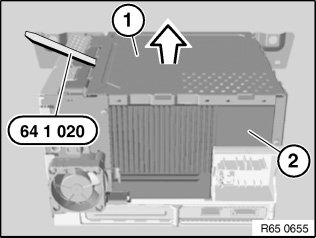
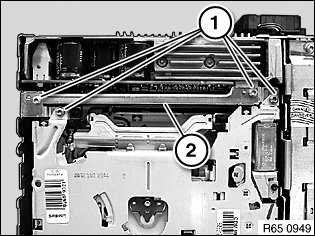
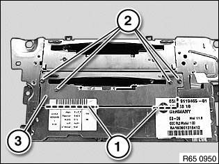
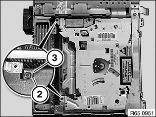
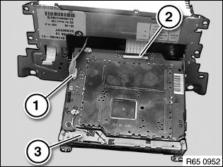
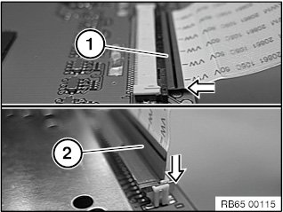

Navigation Module: Service and Repair
65 83 580 Removing And Installing/replacing DVD Drive For Car Communication Computer
Special tools required:

IMPORTANT:
Read and comply with notes on protection against electrostatic damage (ESD protection).
Risk of damage.
Place Car Communication Computer on special tool 12 7 192 (antistatic mat) and connect to earth/ground.

Necessary preliminary work:
- Remove front trim panel for Car Communication Computer

If necessary, cut through warranty seal.
Raise lid (1) with special tool 64 1 020 all round and remove from Car Communication Computer (2).

Release screws (1).
Feed out bridge (2).
Installation note:
Use special tool 00 9 450 to tighten down screws.
Tightening torque 65 11 3AZ.

Cut through labels at marked points (1).
Release screws (2) and remove cover (3).
Installation note:
Use special tool 00 9 450 to tighten down screws.
Tightening torque 65 11 3AZ.

Release screws (1) with magnetic screwdriver.
Installation note:
Tab (2) of DVD drive must be above tab (3) of Car Communication Computer.

Turn Car Communication Computer through 180° and carefully feed out DVD drive.
Carefully disconnect plug connections (1, 2).
Remove DVD drive (3).
Installation note:
Ensure correct cable routing.

NOTE:
There are two versions of the plug connection (2) shown in image R65 0952:
Previous version (1): ribbon cable is connected horizontally
Current version (2): ribbon cable is connected vertically

After installation:
On cars before March 2006 it is essential after replacing the DVD drive to carry out an action plan or a software update as per SSS/Progman/CIP.